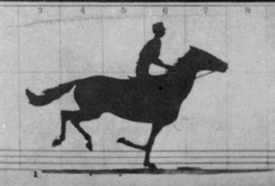

What I do for work

What I do otherwise

Animations!
... and Cartoons
Animations
Informative UX
Storytelling through Animations
Animations
Anatomy
Frame-By-Frame Animations

Muybridge - The Horse In Motion, 1878
Frame-By-Frame Animations

Muybridge - The Horse In Motion, 1878
Animations - A Definition
Image Sequence + Display Frequency = Illusion of motion
Frame-By-Frame Animations in Cartoons
Alla Gadassik - "The Animated Line: Performing and Generating Movement in Early Animation"The story of animations continues until today

Animations On The Web
Animations
Tools and Web APIs
Web Animations 20 Years Ago?
Flash

since 1996
Videos!
Audio!
Animations!
The Infinite Canvas
Rachel Nabors, Keynote "Storytelling on the Shoulders of Giants" - OSCON 2014Animations Demo
Ember & HTML5 Canvas
HTML5 Canvas
Powerful Web API which can be leveraged for animations
Canvas Context Object
// drawing.js
const canvas = document.getElementById('comic-panel');
if (canvas.getContext) {
var ctx = canvas.getContext('2d');
} else {
throw `Everything's fresh, but there's
no context object here,
so time for some polyfilling:
bower install --save canvas-5-polyfill`;
}
HTML5 Canvas & Ember Components
Let's build it!
Creating the Component
{{comic-panel width=width height=height}}// app/components/comic-panel.js
import Component from '@ember/component';
export default Component.extend({
tagName: 'canvas'
})Drawing To The Canvas
Canvas
sx, sy: origin of source image
sWidth, sHeight: width and height of source image
dx, dy: origin of canvas destination
dWidth, dHeight: width and height of canvas destination
Drawing To The Canvas
// app/components/comic-panel.js
export default Component.extend({
init() {
this._super(...arguments);
const image = new Image();
image.onload = () => {
this.set('naturalHeight', image.height);
this.set('naturalWidth', image.width);
this.set('pseudoImg', image);
};
image.src = this.get('imgSrc');
},
})
Drawing To The Canvas
// app/components/comic-panel.js
export default Component.extend({
draw() {
// ...
ctx.clearRect(0, 0, canvasWidth, canvasHeight);
ctx.drawImage(img, sx, sy, sWidth, sHeight,
0, 0, dWidth, canvasHeight);
}
})
/* app/components/comic-panel.js */
setup: Ember.observer('pseudoImg', function() {
const ctx = this.get('element').getContext('2d');
this.set('ctx', ctx);
this.draw();
})
Getting Actions Hooked In
Run Animations
// app/components/comic-panel.js
import { later } from '@ember/runloop';
// ...
loop() {
this.draw();
this.nextFrame();
later(this, this.loop, 100);
}
Run and Cancel Animations
const loop = later(this, this.loop, 100);
this.set('currentLoop', loop);
if (!this.get('runAnimation')) {
cancel(currentLoop);
this.set('currentLoop', null);
})
Demo Final
Animations Demo
Ember & Web Animations API
Web Animations API - Animation Of The Future
...but the browser support?

That's a "No", right?

Web Animations JS Polyfill
Build WAAPI powered animations today!
But of course...
...there's an addon for that!
ember install ember-web-animations-next-polyfillCSS3 Animations go JavaScript
CSS3
@keyframes rotating {
0% {
transform: rotate(0) translate3D(-50%, -50%, 0);
color: #000;
},
33% {
color: #431236;
offset: 0.333;
},
66% {
transform: rotate(360deg) translate3D(-50%, -50%, 0);
color: #000:
}
};
Keyframe Effects
JS
// KeyFrameEffect Objects:
var rotating = [
{ transform: `rotate(0) translate3D(-50%, -50%, 0)`,
color: '#000'
},
{ color: '#431236',
offset: 0.333
},
{ transform: 'rotate(360deg) translate3D(-50%, -50%, 0)',
color: '#000'
}
];
Demo: Animation Component in Ember based on WAAPI
{{comic-panel}}Creating KeyframeEffects
Creating KeyframeEffects
// app/my-route/controller.js
let characterObject = {
.....,
keyFrames: [
{ backgroundPosition: '0 0' },
{ backgroundPosition: `0 100%` }
],
.....
};
Creating KeyframeEffects
let characterObject = {
.....,
animationOptions: {
duration: 500,
easing: `steps(5)`,
iterations: 'Infinity'
}
.....
};
{{comic-panel comicLayer=characterObject}}Creating and starting the animation
/* app/components/comic-panel/component.js */
export default Component.extend({
...
startAnimation: Ember.on('didRender', function() {
let keyFrames = this.get('keyFrames');
let animationOptions = this.get('animationOptions');
this.$()[0].animate(keyFrames, animationOptions);
}),
...
Let's make it real
Multi-layered animations

Embedding comic layer sub components
/* app/components/comic-panel/template.hbs */
{{#each comicLayerList as |layer|}}
{{comic-layer keyFrames=layer.keyFrames
animationOptions=layer.animationOptions
frameAction=(action "setKeyFrames")}}
{{/each}}
// app/components/comic-panel-layer.js
createKeyFrames: Ember.on('didRender', function() {
// ...
const layer = this.get('element');
const keyFrame = new KeyframeEffect(
layer,
this.get('keyFrames'),
this.get('animationOptions')
);
this.sendAction('frameAction', keyFrame);
}
Synchronize the animation layers
/* app/components/comic-panel/component.js */
setupAnimation() {
const timeline = this.get('timeline');
const keyFrameEffects = this.get('keyFrameEffects');
const group = new GroupEffect(keyFrameEffects);
const animation = new Animation(group, timeline);
animation.pause();
this.set('animation');
},
Synchronize the animation layers
/* app/components/comic-panel/component.js */
export default Component.extend({
// ...
actions: {
play() {
this.get('animation').play();
}
pause() {
this.get('animation').pause();
}
}
// ...
})
Demo Final
Animations
Epilogue
The story about animations continues until today
With Ember
& Open Web Standards
The web is yours to be animated
Resources
- Tomster and Zoey Illustration by Lindsey Wilson
- "Inifinite Canvas" quote from Rachel Nabor's Keynote @ OSCON 2014: "Storytelling On The Shoulders of Giants"
- Learn more about the Web Animations API with the excellent How To Guide at MDN
- Full source code for the animation demos
Thank you!
Jessica Jordan
 jjordan_dev
jjordan_dev